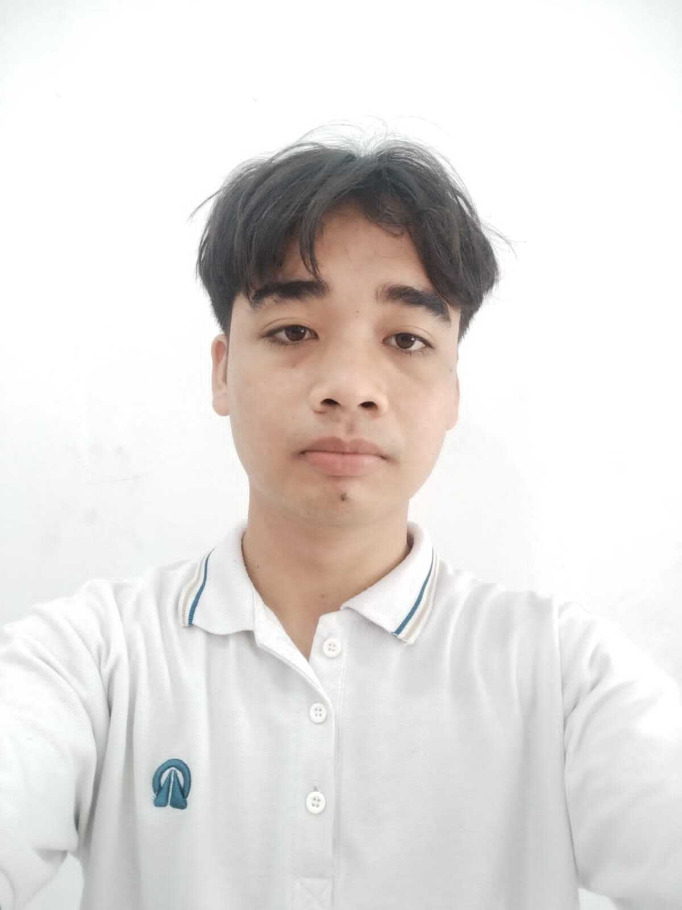

Foto Profil

📝 Tentang Saya
Halo! Perkenalkan nama saya
Kharuddin Harahap
. Saya lahir di Medan pada tanggal
28 April 2005
. Saat ini saya Mahasiswa di Universitas Muhammadiyah Sumatera Utara
Saya memiliki ketertarikan yang besar dalam bidang teknologi, terutama
web development
dan
artificial intelligence
. Saya selalu bersemangat untuk belajar hal-hal baru dan mengembangkan keterampilan saya.
📋 Data Pribadi
-
Nama Lengkap:
Kharuddin Harahap
-
Tempat, Tanggal Lahir:
Medan, 28 April 2005
-
Alamat:
Jl. Gambir Psr 8 Gg Karya Rotan 12
-
Status:
Belum Menikah
-
Agama:
Islam
-
Kewarganegaraan:
Indonesia
🎨 Hobi & Minat
- Membaca Buku
- Berenang dan jogging
- Traveling ke tempat-tempat baru
- Menonton film Anime
🏆 Pencapaian
- Juara Harapan 3 Lomba Sempoa Se Sumatera Utara
- Juara 3 Lomba Mipa Se Sumatera Utara
🎓 Riwayat Pendidikan
-
SD Negeri Min 1 Medan
(2011 - 2017)
Lulus dengan nilai rata-rata 9.0
-
SMP Swasta Nur Ihsan
(2017 - 2020)
Lulus dengan nilai rata-rata 8.5
-
SMA Negeri Man 1 Medan
(2020 - 2023)
Jurusan IPA, lulus dengan nilai rata-rata 8.9
-
Universitas Muhammadiyah Sumatera Utara
(2024 - Saat ini)
Jurusan Sistem Informasi
💻 Keterampilan
-
Programming Languages:
HTML, CSS, JavaScript, Python
-
Frameworks:
Express
-
Database:
MySQL
-
Tools:
VS Code, Linux
-
Languages:
Indonesia (Native)
💼 Pengalaman Kerja
-
Customer Service
- PT Mari Gadai Sejahtera (2025 - Saat Ini)
-
Mechanical Engineering
- Kadira Elektronik (2023 - 2024)
📅 Jadwal Harian
| Waktu |
Kegiatan |
| 05.00 - 07.00 |
Bangun, Mandi, Sholat & Sarapan |
| 07.10 - 07.25 |
Berangkat Kuliah |
| 07.30 - 12.30 |
Belajar |
| 12.40 - 14.00 |
Istirahat, Sholat & Makan |
| 14.10 - 14.30 |
Berangkat Kerja |
| 14.30 - 22.00 |
Pulang Kerja & Istirahat |
📞 Kontak Saya
📱 Social Media
Instagram